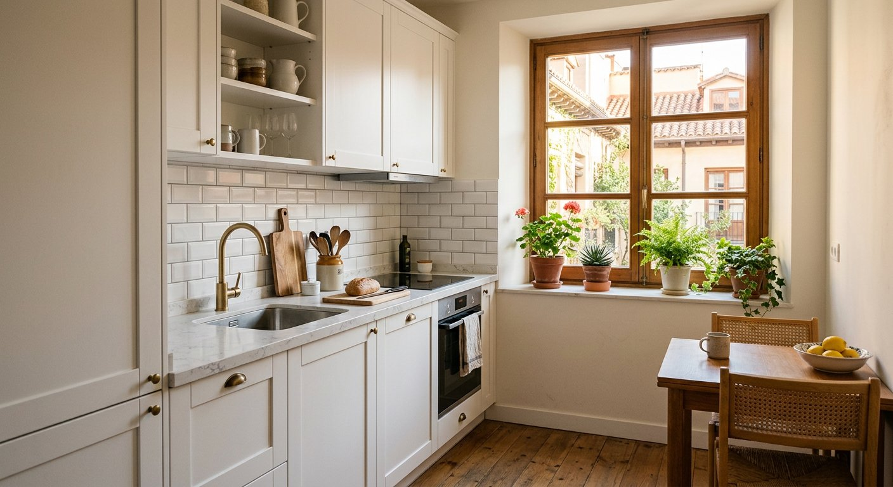

La cocina es el corazón del hogar, y una reforma bien ejecutada cambia por completo la forma en la que vives tu vivienda. En Tadelart Reformas somos especialistas en reformas de cocina en el sur de Madrid, diseñando cada proyecto a medida de tu espacio, tu estilo y tus necesidades.
Trabajamos con muebles de primera calidad, encimeras de cuarzo, Dekton y porcelánico, y coordinamos todos los gremios (albañilería, fontanería, electricidad, carpintería) para que no tengas que preocuparte de nada.
Trabajamos en Arroyomolinos y urbanizaciones cercanas: centro, El Bosque, La Cañada, Los Ángeles, Montecastillo, La Vega y zonas residenciales adyacentes. Estamos familiarizados con los chalets, adosados y pisos de nueva construcción de la zona y sus particularidades constructivas.